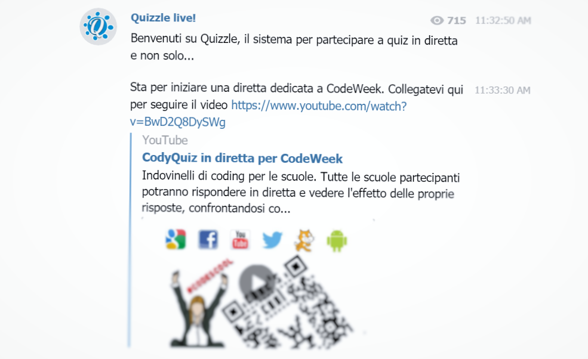
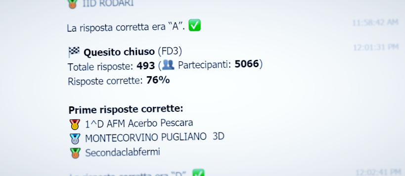
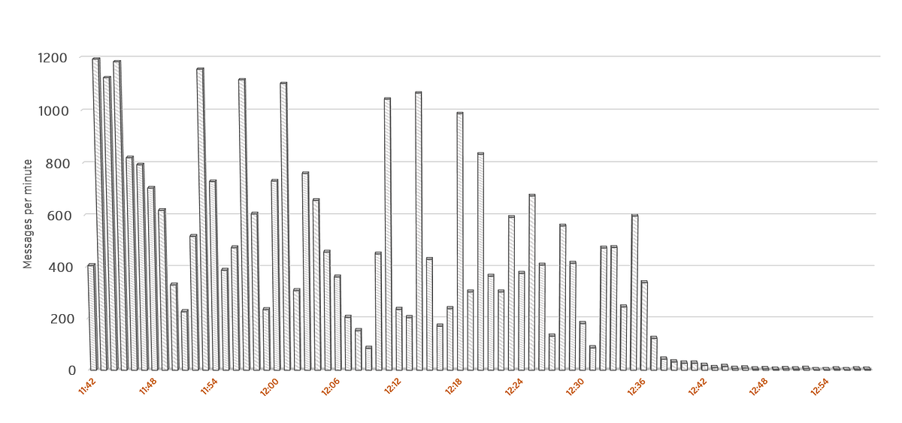

Scaling a Bot for the Europe Code Week
A couple of days have passed since the closing of the Europe Code Week 2016, topping the numbers of past editions with a record-breaking total of 20.000 events organized in more than 50 countries.
In the context of CodeMOOC, a massive open online course offered by the University of Urbino about computational thinking and coding, a large-scale coding quiz was planned for 20 October. Using only a Telegram client and a QR Code scanner, the participants were able to take part in the game and compete with over 900 groups in Italy.

Participants did register to a Telegram channel where they would receive instructions before the start of the game. At the start of the game, we handed out the link to a live Youtube stream, where further instructions and quiz questions were given out.
For each coding quiz, the Telegram bot coordinating the event wrote a special link to the channel conversation, that would redirect users to the voting conversation using Telegram’s deep link feature. Since each quiz had a unique identifier, the deep link would not only transfer the user to the bot, but also send out a hidden command.
/start IY4
(Where IY4 is the hidden code for the 4th quiz question.)
Participants could also access the voting process by scanning a QR Code, containing the same deep link.

Once invoked, the bot did ask for an answer from the user.
As soon as the question was closed from our side (by simply providing the correct answer to the bot through a private chat), the bot did rank all correct answers by their timestamp and signal the results on the channel. The first 3 correct answers were publicly acknowledged with various, priceless, emoji medals. 🥇
Message processing
A total of 974 participants (in terms of Telegram users) took part in the event. Since each person could register for a group of people (acting like a team leader), a total number of 9689 people were involved with the game.
14 questions were asked, collecting a total of 7004 responses by participants, over approximately one hour and a half.
In other words: a lot of messages were sent to our bot over a short amount of time.
Telegram supports two modes of fetching incoming messages: pull and push.
Pull mode
In pull mode, your bot server periodically connects to a Telegram end-point and downloads part of the messages queued up for delivery. The delivery mechanism can be customized, for instance downloading a batch of messages in a single call and using long-polling to stall the request until some data can be returned.
In theory, the pull method ensures higher efficiency: requests are sent out by your server, they can be controlled easily, and large batches of messages can be returned in a single HTTP data transfer.
However, pull operations are synchronized by nature. The Telegram API disallows multiple parallel requests (since, of course, the pull request operates sequentially on the delivery queue).
While transferring one single large payload and performing one single JSON decode step may be more efficient, in pull mode you are indeed increasing the average response time of each message.
Moreover, after the download phase, data parallelism is entirely up to the developer. Handing off message handling to different threads can be more or less easy, depending on your development framework: in Go a goroutine can be dispatched for each message, while the same can be done for async tasks on any .NET language.
Pull mode synchronizes data transfer and makes parallel message processing harder for the developer.
Push mode
This mode — which incidentally is the only mode of operation of many other messaging platforms — trades off the single, efficient data transfer step for multiple parallel message handling operations.
Instead of waiting for your server to fetch messages, updates are pushed to your bot’s web server to an URL of your choice (Telegram requires HTTPS, a domain name, and a certificate). Instead of having to deal with parallelism, this mode exploits the inherent strong points of a web server: dealing with multiple incoming connections and handling them off efficiently to your code.
Your web server was born for this.
Results
Based on our logs, 7.414.458 messages where sent to the bot through Telegram, in little over 80 minutes of operation.

Initially, the bot was configured to operate via pull mode and synchronous message handling, since this mode allows for far easier debugging and development. However, as soon as the event did start, we quickly discovered that the queue of messages was growing uncontrollably and the bot simply could not keep up.
We quickly switched over to push mode. Over the course of a couple of minutes the bot was able to catch up and performed very responsively for the rest of the event.
The bot was running on a quad-core machine clocked at 2.6 GHz, with 2 GBs of RAM.
In conclusion, pull mode is perfectly suited for bot development, since it allows developers to control the flow of messages and to carefully debug the code. Implementing an efficient message handling method via pull mode, however, probably isn’t worth the development effort. As suggested by others, it is far easier to entrust the web server with handling parallel requests on your behalf.
More generally — and this is very important in the context of the recent focus on bots as a replacement of apps — using a bot instead of a web site (for instance) gave us a very important advantage. The messaging platform, Telegram in this case, acts as an extremely scalable load balancer in front of your service. It handles message queuing, retrying, delivery, and push notifications — essentially Telegram offers an incredible amount of complex infrastructure for free. This allows you to focus on actual service development instead of having to worry about the plumbing.
The messaging platform is a large part of your service’s infrastructure and it does a lot of work on your behalf.
So, thank you, Telegram. 🙏
This Europe Code Week event has been a good opportunity to appreciate the effects of an unusual load (for our scale of development) on our bot. Further similar events will be planned in the near future and we look forward to evaluating performance and scaling issues in deeper detail.
The code used during the event is available on Github.
This post was first published on the blog of the Applied Computer Science course at the University of Urbino.